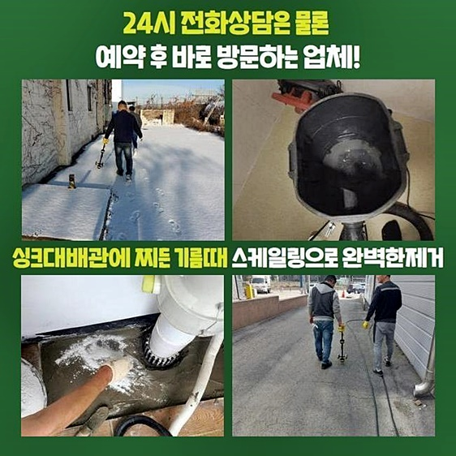
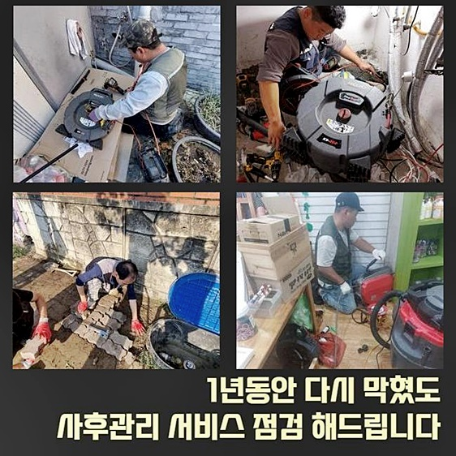
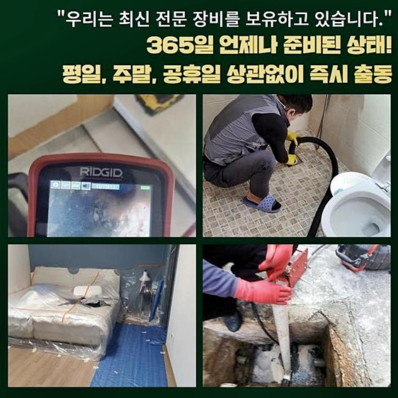
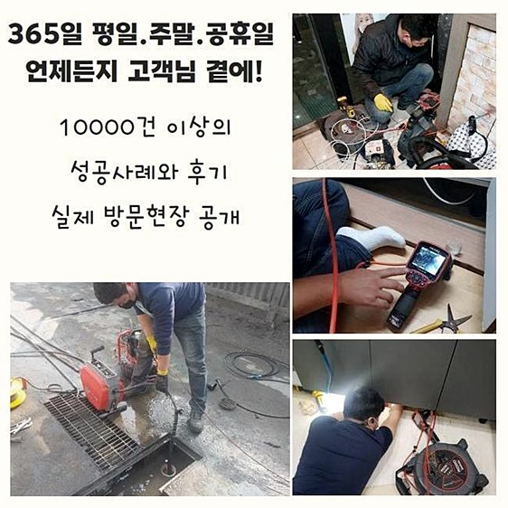
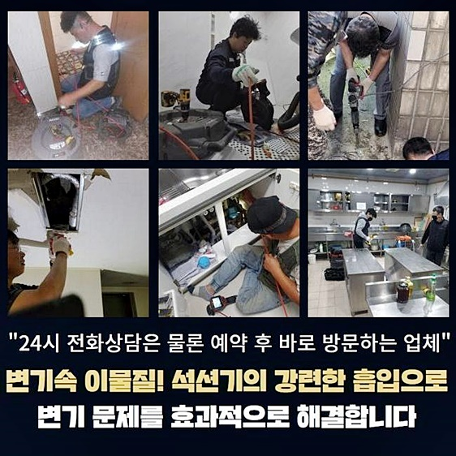
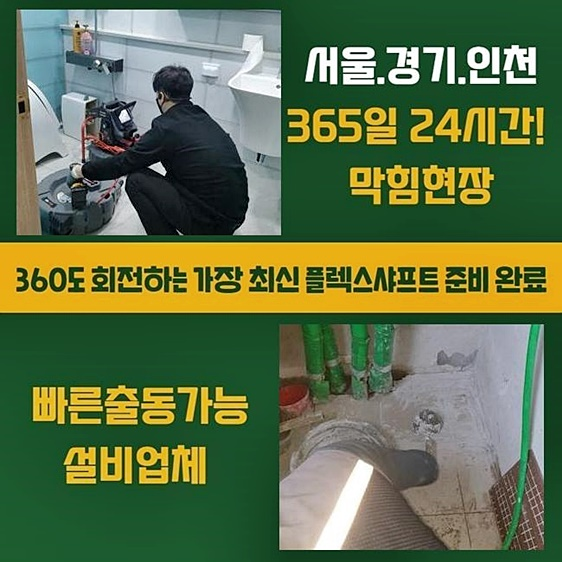

🏠 종로 종로3가싱크대뚫음 송월동 하수구뚫어주는업체 누수
용인시 처인구 배관막힘 전문 시공 후기

📋 작업 개요
- 위치: 용인시 처인구, 수원시 영통구, 화성시 동탄
- 서비스 유형: 배관막힘, 누수수리, 내시경점검
- 작업 일시:
- 업체명: 하수구수사대 (010-5615-2118)
🔍 문제 상황
종로 종로3가싱크대뚫음 송월동 하수구뚫어주는업체 누수
이번 시공 장소는 외식업에 종사하시는 고객님께서 연락 주셔서 출장을 다녀온 것이었어요
이처럼 개인 매장을 이어가는 곳이라면 하수구의 곤란이 막대한 불편을 초래합니다!
평상시 같은 영업을 못하니 재정적 부담이 점차 눈덩이처럼 불어나니 빠르게 손을 봐주는 민첩함이 요구됩니다
여러 단골손님을 확보한 식당을 하고 계신 고객님께서는 예상치 못한 순간 배수관이 막혀버리면서 엄청난 어려움을 호소하셨습니다
오늘도 손님들이 식사하러 온다고 하셔서 준비물을 철저히 챙겨넣고 문제 문제 걸음을 서둘렀습니다
조급해 보이시는 사장님의 말씀을 간략히 듣고서 문제 발생지로 향해보니 여러가지의 이슈들이 명백히 발견되었습니다
사안을 명확하게 검사해야 했기에 우선 싱크대 수도꼭지를 돌려보니 전혀 물의 배출이 이루어지지 못하고 있는 말그대로 고립 상태였어요
며칠 전부터 사실 평상시랑 다르다는 걸 아셨지만 나중에 손보려는 의도로 지켜보고 계셨다고 합니다
일말의 막힘에 대한 기미가 눈에 들어온다면 즉시 배관 전문가에게 문의하시는 대처가 핵심입니다
며칠 동안 해야하는 공사가 필요한 상황이면 어쩌나 마음 졸이시는 의뢰인분을 진정시켜드리면서 일단 문제장소를 진득하게 살펴봤어요
이후는 어떤 절차를 통해서 난제를 풀어내 나갈지에 관해서도 이어서 전달드렸습니다
물의 정상적인 배출이 좀처럼 수행되지 않으니 물길을 내고자 흡입하는 석션을 가동했네요

🔎 원인 분석
💡 전문가 진단: 정밀 진단 장비를 사용하여 슬러지의 고착 여부를 판명하고 타격/세척 작업을 실시했습니다.
초반 부를 석션기로 제거해 준 이후 내시경을 켜서 배관에 쑥 밀어넣어 투입을 해보았는데요
완벽하게 열린 물길을 만들려면 속을 철저히 검토해서 현황을 건져올려야 하는데요
통로가 완전 봉인됐을 때 철저히 보수를 해주려면 뭐때문에 빚어진 일인지 세세하게 체크해야 합니다
오랜 업력을 통해서 기술력이 탁월한 전문가라 해도 장치의 도움 없이 잘못된 장소를 식별한다는 것은 현실적으로 어렵습니다
기술력이 좋은 장비를 동원해서 세세하게 진단하는 과정 자체가 제일 중대한 작업입니다
하수구의 구멍을 통하여 내시경 장치를 투입해서 어떤 물질이 도화선이 되어 막힘이 탄생한 것인지 체크했습니다
심층부에 달하는 지점까지 카메라로 영상을 찍어보았는데 오염물이 기다란 배관에 꽉 차 있는 꽉 막힌 모습이었네요
적은 양의 수돗물이라도 통과할 틈도 없을 정도로 철저히 가득 차버렸더라고요
하수구 고장의 진짜 원인을 보면서 전모를 파악하고서 막힘과 역류의 동기에 대해 의아하실 고객님에게도 구체적으로 설명을 추가했습니다
물이 흘러가야 정상일 하수관이 정상 기능을 발휘하지 못하면 먼저 관측 기기를 넣어서 분석하고 뚫음을 시작해야해요
효과적이고 빠른 노선이라 여겨지는 맞춤 시공을 통해서 작동의 곤란함을 완전히 정복할 수 있답니다
배관 위부터 카메라를 발동시켜 보며 심층부의 현황까지도 빠지지 않고 찾아냈어요
보편적으로 음식을 판매하는 식당은 다량의 기름과 물을 활용해야만 하므로 슬러지가 도화선이 되는 케이스가 가장 흔합니다

🔧 작업 과정
예측은 됐지만 이것만으로 뚫으려 나서는 게 아닌 물리적인 기계를 접목하여 상황을 분명하게 바라보는 돌다리를 두들겨보는 작업에 들어갑니다
내부에 고여있는 노폐물들을 이해하고 나서는 플렉스 샤프트를 동원해서 이물을 정돈해야 했습니다
혹시 단순한 스프링 기기를 써서는 해결되지 않냐고 질문을 저희에게 하셨습니다
그리 중중하지 않은 문제라고 보이는 현장일 경우에는 쉬운 장치만 적용해서 문제를 고쳐보려고 현명하게 처사하고 있습니다
돌돌 말려있는 형태의 스프링 타입인 이 기기는 사이사이에 오염물을 고정시켜 빼내는 데에 효력을 발휘하게 됩니다
부드러운 형상이 아니라 찌꺼기가 강도높은 고체로 응집된 상황을 띠고 있다면 아예 쓸모가 없다고 봐야합니다
적용장비의 정보에 대해서도 설명하며 납득시켜 드리고 해달라고 말씀하셔서 바로 샤프트 절차를 수행할 수 있었어요
내시경 전문적인 관찰 장비를 통해서가며 깊숙한 깊이에 이르기까지 제대로 봐주려는 목적으로 조심스레 배치해 보았어요
영문 모르게 고장난 하수관로의 현재 모습을 뚜렷하게 감지할 수 있게 도우며 숨어있는 집적된 찌꺼기들을 추출할 수 있게 하는 핵심 툴입니다
이물질을 잡아 올리는 처리법을 통해서는 물길을 확보하긴 역부족이라는 잠정적인 판단이 되어 덩어리진 물질을 잘게 깨서 잔여분 없이 쾌적한 하수구를 구축해야 했지요
오염물들이 잔여하고 흔적없이 제거되지 않는다면 이러한 고질적인 막힘이 만성화가 될 수 있기 때문에 완전무결한 수준으로 정리정돈을 해줘야 했습니다
처음 제거장비를 구동시켰을 때만 해도 고착화된 물질이 꿈쩍하지도 않고 별다른 차도가 없는 상황이라 추정하실 수 있는데요
사실 배관 속은 각양각색의 노폐물들이 서로 응집해서 말라붙어 있었으며 공백이 있어야 할 통로가 숨쉴 틈도 없는 상태였죠
정체 상황이 나쁜 곳이라면 완수까지 훨씬 오래 소요되며 더 오래 힘을 써야겠죠
지친다는 기색 없이 장애요인이 싹 잡힐 때까지 샤프트로 오염원을 파괴하는 절차를 꾸준히 이어갔어요
스피디하게 도는 노커가 고체 물질을 자잘하게 분해하고 끄집어 올려주기도 하면서 환경을 개선하고 물의 정상적인 흐름을 되살리는 데에 큰 공헌을 해줍니다
꾸준한 작업 활동과 우수한 도구의 서포트로 가로막혀있던 배수로 경로가 열리는 게 보였습니다
시간이 갈수록 변화가 약간씩 쌓여나가다가 막힘없는 작동과 성능을 다시금 얻게 되어 전기능이 이상 없이 성취 되었습니다
비위생적이던 썩은 오물들이 흔적 없이 제거됐음을 확인한 이후에는 통수 테스트를 실시했습니다
영업시설의 수도꼭지를 돌려서 물을 내려보내고 나아지는지 알아보니 손대기 직전과는 달리 순조롭게 내려가는 것을 검증할 수 있었네요


✅ 작업 완료
단순히 구멍만 냈다고 서둘러 마무리하지 않고 시공 퀄리티가 양호한지도 다수의 테스트로 체크하여 추후에도 시설이 건강할 수 있게 합니다
이런 서비스를 또 해야 한다면 출장비 및 작업 비용을 헛되게 버릴 수 있으니 저희가 맡으면 고객님의 권리를 든든하게 보호하고자 성실하게 작업을 해드립니다!
이번 현장같이 설비에 특정한 마찰이 생긴다면 물의 사용이 많을수록 더 큰 피해를 겪을 수 있는 일이죠
물의 흐름이 끊기기 전에 주의깊게 케어하는 것이 일이 벌어진 후 수습보다 필수불가결한 것입니다
이와 같은 준설 오류로 전문적인 조언과 조치가 필수적인 상황 속에 계신다면 저절로 나아지길 바라지 마시고 의뢰를 해주시길 바랍니다
책임감 있는 자세로 휴일이라고 하더라도 밤낮없이 달려가겠습니다!



⚠️ 하수구 배관 막힘 예방 및 관리 가이드
- ✅ 머리카락, 비닐, 물티슈 등 물에 분해되지 않는 이물질은 절대 흘려보내지 마세요.
- ✅ 기름기 많은 식기는 설거지 전 키친타올로 먼저 기름때를 닦아내세요.
- ✅ 주기적으로 배수구에 뜨거운 물을 가득 부어주어 유지방 고착을 방지하세요.
- ✅ 작업 후 1년 이내 재발 시 무상 A/S 보증 서비스를 제공합니다.
💡 핵심 정리
- 확실한 장비 작업(내시경 점검 및 샤프트 스케일링)으로 원인을 뿌리 뽑습니다.
- 작업 후 1년 이내에 동일한 부위 재발 시 100% 무상 A/S 서비스를 보장합니다.
- 서울 · 경기 · 인천 전 지역에 24시간 언제든 긴급 출동할 수 있도록 항시 대기 중입니다.
❓ 자주 묻는 질문 (FAQ)
🚨 용인시 처인구 배관막힘 문제로 고민이신가요?
정확한 원인 진단과 확실한 시공으로 재발 없는 해결을 약속드립니다.
24시간 긴급 출동 | 서울 · 경기 · 인천 전지역 | 1년 내 재발 시 무상 A/S